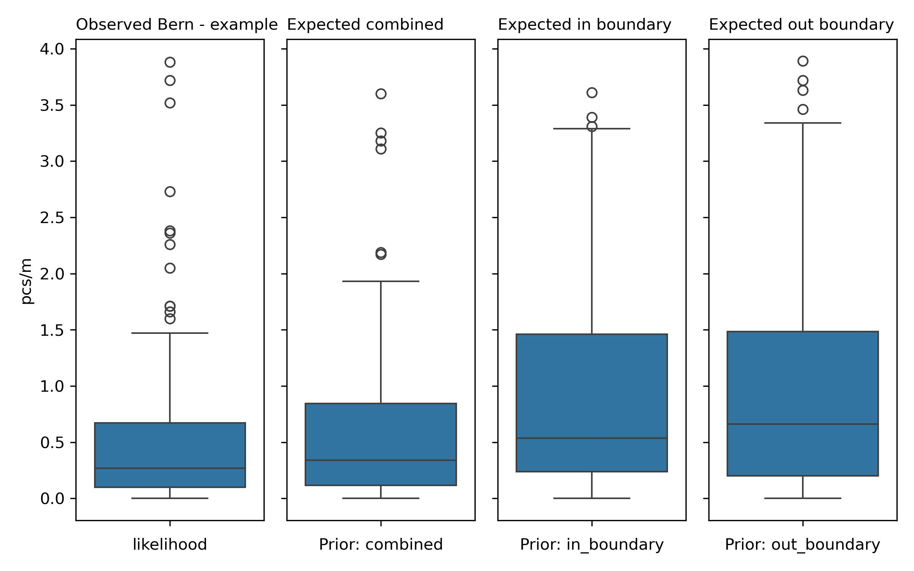

Bern - example canton#
Summary and analysis of observations of trash density: objects related to tobacco and food and drink found in lakes and rivers. Report number: Bern - example canton 2020-01-01 2021-05-31
Proof of concept: llm assissted reporting grid forecasting example
Executive Summary#
The report covers data collected from 21 cities within the canton of Bern from January 26, 2020, to April 23, 2021. The surveyed areas include four rivers (Aare, Aarenidau-Buren-Kanal, Emme, Schuss) and three lakes (Bielersee, Brienzersee, Thunersee). A total of 89 samples were analyzed, yielding an average density of 0.61 pcs/m, a median of 0.27 pcs/m, a maximum of 3.88 pcs/m, and a standard deviation of 0.84. A total of 2,260 objects were identified, with the most common items being cigarette filters (fail rate of 81%, 73.94% of total) and food wrappers (fail rate of 80%, 26.06% of total).
Sampling stratification is a method to ensure sample representation across various land-use features surrounding a survey location. The survey areas were classified as mixed land use environments since neither the urban nor rural criteria were met. The sampling stratification table indicated that the highest pcs/m was observed in areas where buildings occupied 40-60% of the buffer zone, with an average density of 1.33 pcs/m and 25.8% of samples collected in that range. This table helps in understanding how different land-use features influence litter density.
Regression analyses were conducted using various models, with the Bagging: Random Forest Regression model demonstrating the highest R² value of 0.62 and an MSE of 0.48. This suggests a moderate level of reliability in predictions. Feature importance, as determined by model feature importance, highlighted streets (0.274), buildings (0.218), and forest (0.116) as key predictive variables. Permutation feature importance further supported these findings, with buildings (0.137) and streets (0.035) being significant.
Grid approximation was utilized to estimate the likelihood of survey results exceeding given thresholds based on prior and new data. The observed average pcs/m was 0.61, while the posterior averages were 0.96 (in-boundary), 0.98 (out-boundary), and 0.62 (combined). These results indicate a potential increase in trash density within the surveyed boundaries. Comparing the posteriors to observed results suggests a likelihood of encountering higher trash densities in future observations.
Sample results#
The report encompasses a total of 21 cities located within the canton of Bern. Among them, the cities include Kallnach, Biel/Bienne, Vinelz, Brienz (BE), Spiez, Lüscherz, Nidau, Walperswil, Köniz, Bern, Brügg, Gals, Port, Burgdorf, Unterseen, Rubigen, Erlach, Thun, Beatenberg, Ligerz, and Bönigen. The survey also identifies a total of 4 rivers (Aare, Aarenidau-Buren-Kanal, Emme, Schuss) and 3 lakes (Bielersee, Brienzersee, Thunersee) in the named features section.
The data collection took place from January 26, 2020, to April 23, 2021, with the survey area designated as Aare. A total of 89 samples were analyzed, revealing an average of 0.61 pcs/m (objects per meter), a median of 0.27 pcs/m, a maximum of 3.88 pcs/m, and a standard deviation of 0.84. The total number of identified objects amounted to 2,260.
The most common objects found in the survey, characterized by their greatest quantity, include:
Cigarette filters: Fail rate of 81%, representing 73.94% of the total (1,671 pcs).
Food wrappers; candy, snacks: Fail rate of 80%, comprising 26.06% of the total (589 pcs).
The material composition of the identified objects is exclusively plastic, comprising 100% of the total objects.
Sample results frequently asked questions
Frequently asked questions
1. What were the ten most common items found?
The report primarily identifies two objects with significant quantities and fail rates:
Cigarette filters: Fail rate of 81% (indicating that at least one was found in 81% of the samples), comprising 73.94% of the total (1,671 pcs).
Food wrappers; candy, snacks: Fail rate of 80% (indicating that at least one was found in 80% of the samples), comprising 26.06% of the total (589 pcs).
2. Are these objects found on European beaches? If so, is there any data on how many per 100 m of beach?
Yes, many of these objects, particularly cigarette butts and food wrappers, are commonly found on European beaches. According to the OSPAR (Oslo and Paris Conventions for the Protection of the Marine Environment of the North-East Atlantic) results from 2021, cigarette butts were reported at an average density of 37.6 items per 100 meters of beach. For more detailed information, you can visit the OSPAR website: OSPAR 2021 Report.
3. What are possible sources of these specific objects?
The specific objects identified, such as cigarette filters and food wrappers, primarily originate from human activities. Cigarette filters are often discarded carelessly in public spaces, including beaches and parks, while food wrappers typically come from take-out food, snacks, and picnics. Littering and inadequate waste disposal methods significantly contribute to the presence of these items in natural environments.
4. Which three cities had the highest average pcs/m? Which three had the lowest?
The three cities with the highest average pcs/m are:
Biel/Bienne: 1.62 pcs/m
Ligerz: 1.55 pcs/m
Bönigen: 1.25 pcs/m
The three cities with the lowest average pcs/m are:
Walperswil: 0.00 pcs/m
Kallnach: 0.09 pcs/m
Köniz: 0.09 pcs/m
| pcs/m | buildings | forest | undefined | streets | public-services | recreation | |
|---|---|---|---|---|---|---|---|
| cluster | |||||||
| 0 | 0,39 | 0,04 | 0,21 | 0,75 | 0,09 | 0,00 | 0,00 |
| 1 | 0,06 | 0,17 | 0,56 | 0,13 | 0,05 | 0,04 | 0,00 |
| 2 | 1,02 | 0,46 | 0,33 | 0,21 | 0,61 | 0,05 | 0,01 |
Sampling stratification#
Sampling stratification refers to the systematic method of collecting samples in a way that ensures representation across various land-use features surrounding a survey location. In this context, land-use features include categories such as buildings, forests, wetlands, public services, and recreation areas. Each survey location is surrounded by a buffer zone of radius 1,500 meters, and the proportion of this buffer dedicated to each land-use feature is measured to understand how it influences the results of the survey. Thus, the sampling stratification provides insights into the environmental context of the survey locations, allowing for a more nuanced understanding of litter density based on land use.
In the sampling stratification and trash density table, the highest pieces per meter (pcs/m) values for buildings, forest, and undefined categories were observed under different conditions. For buildings, the highest value was 1.33 pcs/m, which occurred when buildings occupied the 40-60% proportion of the buffer zone, with 25.8% of the samples collected in that range. For forests, the highest value was 0.79 pcs/m, found in the 20-40% proportion of the buffer, where 64.0% of the samples were collected. The undefined category also had a notable average of 0.96 pcs/m in the 0-20% proportion of the buffer, with 34.8% of the samples collected. These values indicate the density of trash found in relation to the space occupied by each land use feature.
| Proportion of samples collected | |||||||||
|---|---|---|---|---|---|---|---|---|---|
| buildings | wetlands | forest | public-services | recreation | undefined | streets | vineyards | orchards | |
| proportion of buffer | |||||||||
| 0-20% | 30.3% | 100.0% | 27.0% | 98.9% | 100.0% | 34.8% | 44.9% | 100.0% | 100.0% |
| 20-40% | 31.5% | none | 64.0% | 1.1% | none | 12.4% | 36.0% | none | none |
| 40-60% | 25.8% | none | 9.0% | none | none | 51.7% | 11.2% | none | none |
| 60-80% | 10.1% | none | none | none | none | 1.1% | 5.6% | none | none |
| 80-100% | 2.2% | none | none | none | none | none | 2.2% | none | none |
| Pieces of trash per meter | |||||||||
|---|---|---|---|---|---|---|---|---|---|
| buildings | wetlands | forest | public-services | recreation | undefined | streets | vineyards | orchards | |
| proportion of buffer | |||||||||
| 0-20% | 0,52 | 0,61 | 0,31 | 0,62 | 0,61 | 0,96 | 0,38 | 0,61 | 0,61 |
| 20-40% | 0,22 | none | 0,79 | 0,03 | none | 0,79 | 1,04 | none | none |
| 40-60% | 1,33 | none | 0,22 | none | none | 0,34 | 0,32 | none | none |
| 60-80% | 0,31 | none | none | none | none | none | 0,48 | none | none |
| 80-100% | 0,31 | none | none | none | none | none | 0,07 | none | none |
Sampling stratification frequently asked questions
Frequently asked questions
1. What does the sampling stratification table tell us?
The sampling stratification table provides critical insights into the density of trash as it relates to different land-use features. For instance, in the category of buildings, when the proportion of the buffer zone occupied by buildings is 40-60%, the average trash density is 1.33 pcs/m, and 25.8% of the samples were collected in that range. This indicates a significant concentration of trash in areas where buildings are prevalent. In terms of undefined land use, the average density is 0.96 pcs/m when undefined areas occupy 0-20% of the buffer, with 34.8% of the samples collected. This suggests that even in areas not specifically categorized, there are notable levels of litter, warranting attention.
2. How can the information in the sampling stratification and trash density table help identify areas of concern?
The information in the sampling stratification and trash density table is instrumental in identifying areas of concern by highlighting where trash density is highest relative to specific land uses. By knowing which areas exhibit the most litter, policymakers and environmental agencies can prioritize cleanup efforts and implement measures to reduce litter in high-density zones. For example, if certain areas with a high proportion of buildings also show elevated trash densities, it could indicate a need for increased waste management resources in urban settings. Similarly, areas with high undefined density may require further investigation to understand the sources and types of litter present.
3. Under what land-use conditions would a surveyor expect to find the most trash?
Surveyors would expect to find the most trash in areas where buildings occupy a larger proportion of the buffer zone. For example, when buildings occupy 40-60% of the buffer zone, the average density is 1.33 pcs/m. This indicates a significant concentration of litter in these urbanized areas. Similarly, in forested areas, when the buffer is occupied by forests at 20-40%, the average density is 0.79 pcs/m. These examples demonstrate that both urban and semi-urban areas are likely to have higher trash densities, prompting further investigation and potential mitigation strategies.
4. Given the results in the sampling stratification table, were these surveys collected in mostly urban environments or forested?
The surveys do not predominantly meet the criteria to classify the surveyed locations as either urban or rural. To determine urban classification, the sum of the proportions of samples for buildings in the rows 60-80% and 80-100% must exceed 50%. Here, the respective values are 10.1% and 2.2%, totaling 12.3%, which is below 50%. For rural classification, the sum for forests in the same rows must exceed 50%. However, there are no samples in these ranges for forests. Thus, the area is considered mixed, as neither classification criterion is met. The highest proportion of samples for buildings is 31.5% at 20-40% of the buffer, while the highest for forests is 27.0% at 0-20%, indicating a diverse land-use environment without a clear dominant category.
Linear and ensemble methods#
Define cluster analysis (kmeans): Cluster analysis, specifically K-Means clustering, is a method used to group a set of observations into clusters, where each observation belongs to the cluster with the nearest mean. This approach helps identify patterns in data by categorizing observations based on their features.
Identify the cluster that had the highest pcs/m and cite the composition of buildings, forest, undefined, the units are average proportion of the buffer: The cluster that had the highest pcs/m was cluster 2, with an average of 1.02 objects per meter of beach. The composition of this cluster is as follows: buildings = 0.46, forest = 0.33, and undefined land use = 0.21, representing the average proportion of the buffer zone.
Define linear regression and ensemble regression, explain the basic assumptions of each method: Linear regression is a statistical method used to model the relationship between a dependent variable and one or more independent variables by fitting a linear equation to the observed data. The basic assumptions of linear regression include linearity, independence of errors, homoscedasticity (constant variance of errors), and normality of error terms. Ensemble regression, on the other hand, combines multiple regression models to improve prediction accuracy. Basic assumptions for ensemble methods include the independence of individual models and the assumption that the combined models can reduce variance and bias, thereby improving overall performance.
If a regression analysis was conducted cite the model that had the highest r², cite the name and the MSE: The model that had the highest R² was the Bagging: Random Forest Regression with an R² of 0.62 and a mean squared error (MSE) of 0.48.
If there was a regression analysis conducted, what conclusions can be drawn given the best model? Given the r² and MSE of the best model how reliable would predictions be?: Given that the Bagging: Random Forest Regression model had the highest R² value of 0.62, it indicates a moderate level of explained variance in the data, suggesting that the model can reasonably predict outcomes based on the input features. The MSE of 0.48 indicates that there is some error in the predictions, but it is not excessively high, suggesting that the model’s predictions could be considered reliable within the context of the data.
Linear methods frequently asked questions
Frequently asked questions
What were the r² and MSE of each test?: The following are the R² and MSE results from the regression analysis conducted:
Model |
R² |
MSE |
|
|---|---|---|---|
0 |
Linear Regression |
0.17 |
1.05 |
1 |
Random Forest Regression |
0.61 |
0.49 |
2 |
Gradient Boosting Regression |
0.16 |
1.07 |
3 |
Theil-Sen Regressor |
0.22 |
0.99 |
4 |
Bagging: Random Forest Regression |
0.62 |
0.48 |
5 |
Voting |
0.38 |
0.78 |
Given the r² and MSE of the different methods employed, how reliable do you think predictions would be based on these models?: The reliability of predictions varies across the different models. The Bagging: Random Forest Regression, with an R² of 0.62 and MSE of 0.48, indicates a moderate level of reliability. However, models such as Linear Regression and Gradient Boosting Regression show lower R² values and higher MSE, suggesting less reliable predictions.
Can any conclusions be drawn from these results?: Yes, conclusions can be drawn regarding the effectiveness of different regression models. The Bagging: Random Forest Regression model appears to be the most effective in predicting outcomes, as evidenced by its highest R² and lowest MSE. This suggests that ensemble methods may provide better predictive performance compared to simpler models like Linear Regression.
According to the cluster analysis what is the cluster that has the greatest average pcs/m? What is the distribution of land use values within the cluster?: According to the cluster analysis, cluster 2 has the greatest average pcs/m, with an average of 1.02 objects per meter of beach. The distribution of land use values within this cluster is as follows: buildings occupy 46.3% of the buffer, forest occupies 33%, and undefined land use occupies 20.6%.
Forecasts and methods#
A grid approximation is a statistical method used to estimate the probability of survey results exceeding a given threshold by employing prior observations and new data. It is constructed using an inference table, which contains the statistical measures derived from the data, including priors and likelihoods. An inference table summarizes the relationship between prior distributions (previously observed data) and likelihood distributions (data from the specific location being analyzed) to create posterior distributions (updated beliefs after considering new data).
In the context of this report, the priors and their respective similarity thresholds are as follows:
In boundary prior: 0.98
Out boundary prior: 0.98
The posterior distributions for the different grid approximations provide a comparison to the observed results in terms of objects per meter (pcs/m). The observed average pcs/m from the summary statistics is 0.61. The average pcs/m for each posterior is as follows:
In boundary posterior: 0.96 (difference from observed: 0.35)
Out boundary posterior: 0.98 (difference from observed: 0.37)
Combined posterior: 0.62 (difference from observed: 0.01)
In general, the in-boundary and out-boundary posteriors suggest a higher average than the observed value, indicating a likelihood of an increase in trash density within those boundaries.
When considering the likelihood of noticing changes in trash density, if a person takes one sample, they may not be able to confidently determine an increase or decrease. However, if two samples are taken, the likelihood of noticing a change increases, as the combined data from two samples can provide a clearer picture of the density trends.

Grid approximation frequently asked questions
Frequently asked questions
1. Why is grid approximation a reasonable modeling technique given the data?
Grid approximation is a reasonable modeling technique given the data because it allows for the estimation of probabilities across a specified range, accounting for both prior knowledge and new information. In this case, the mean pcs/m is 0.61, while the median is 0.34. The difference between the mean and median (0.27) suggests that the data may not be normally distributed, as a normal distribution typically has mean and median values that are close together. If the data were normally distributed, we could expect the predictions from the grid approximation to be more reliable. However, since it appears skewed, this indicates that the predictions may have higher uncertainties, especially in the context of trash density.
2. Do you have an example of other fields or domains that use grid approximation or Bayesian methods?
Yes, grid approximation and Bayesian methods are used in various fields, including environmental science for assessing pollution levels, finance for risk assessment, and clinical research for estimating the efficacy of treatments.
3. If the data is normally distributed, would the predictions from the grid approximation and the predictions from the normal distribution be different? If so, in what way?
If the data is normally distributed, the predictions from the grid approximation may align more closely with those from a normal distribution approach. The normal distribution would provide a clear mean and standard deviation, which can be used to make probabilistic predictions about new observations. In contrast, grid approximation might show wider variations in predictions due to the incorporation of less reliable priors.
4. What is the difference between grid approximation and linear or ensemble regression?
Grid approximation focuses on estimating probabilities of outcomes based on prior distributions and new data, treating each grid point as a potential threshold. Linear regression, on the other hand, identifies a linear relationship between dependent and independent variables, while ensemble regression combines multiple models to improve prediction accuracy. Grid approximation does not assume a linear relationship and is more flexible in handling different distributions.
5. With which posterior do we expect to find most? The least?
We expect to find the most with the in boundary posterior, which averages 0.96 pcs/m, suggesting higher trash density within the boundary. Conversely, we would expect to find the least with the combined posterior, which averages 0.62 pcs/m, indicating a lower density compared to the in-boundary and out-boundary estimates.
6. If the in-boundary grid approximation predicts an increase or decrease, what does that say about the other samples from within the boundary?
If the in-boundary grid approximation predicts an increase, it suggests that there were likely elevated values observed in other locations within the boundary compared to the likelihood. This weighting indicates a trend of increasing trash density based on the aggregated data from various locations.
7. If the out-boundary grid approximation predicts an increase or decrease, what does that say about the other samples from outside of the boundary?
If the out-boundary grid approximation predicts an increase, it indicates that other locations outside the boundary exhibited elevated values compared to the likelihood. This suggests that the trash density in areas outside the boundary may be contributing to an overall increase in trash density trends.
8. How different are the expected results from the observed results? Should an increase or decrease be expected?
The expected results differ from the observed results, with the in-boundary posterior averaging 0.96 and the out-boundary posterior averaging 0.98, compared to the observed average of 0.61. The differences in average pcs/m indicate a potential increase in trash density. Given the standard deviations of the posteriors (0.94 for in-boundary and 0.99 for out-boundary), it seems reasonable to expect an increase in future observations, particularly given that the observed value is lower than both the in-boundary and out-boundary predictions.
Consolidated results : city, survey area#
| city | quantity | pcs/m |
|---|---|---|
| Beatenberg | 29 | 0,67 |
| Bern | 10 | 0,07 |
| Biel/Bienne | 1'034 | 1,62 |
| Brienz (BE) | 68 | 0,46 |
| Brügg | 10 | 0,28 |
| Burgdorf | 4 | 0,09 |
| Bönigen | 106 | 1,25 |
| Erlach | 28 | 0,49 |
| Gals | 8 | 0,21 |
| Kallnach | 5 | 0,08 |
| Köniz | 6 | 0,09 |
| Ligerz | 24 | 1,54 |
| Lüscherz | 17 | 0,06 |
| Nidau | 15 | 0,60 |
| Port | 61 | 0,70 |
| Rubigen | 3 | 0,17 |
| Spiez | 50 | 0,08 |
| Thun | 65 | 0,31 |
| Unterseen | 658 | 0,69 |
| Vinelz | 59 | 0,33 |
| Walperswil | 0 | 0,00 |
| parent_boundary | quantity | pcs/m |
|---|---|---|
| aare | 2'260 | 0,61 |
Inventory#
| quantity | pcs/m | % of total | sample_id | fail rate | object |
|---|---|---|---|---|---|
| 1'671 | 0,42 | 0,74 | 89 | 0,81 | Cigarette filters |
| 589 | 0,19 | 0,26 | 89 | 0,80 | Food wrappers; candy, snacks |